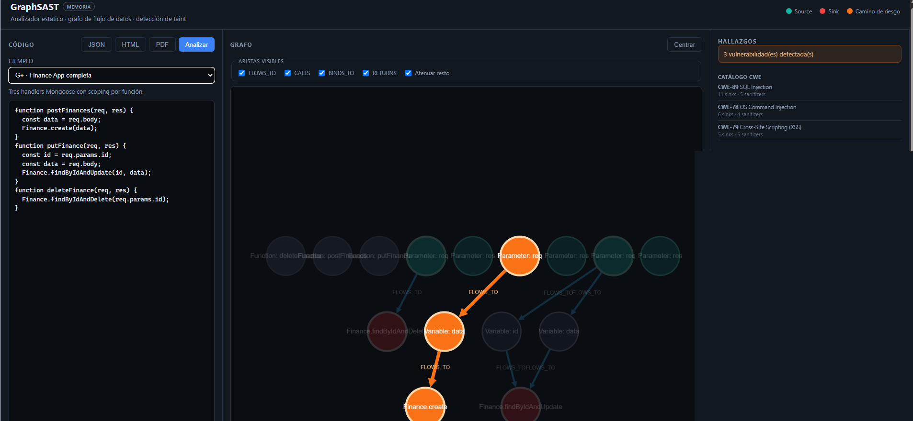

Security · Automation
GraphSAST — Automated Static Security Analysis
View repo →
The Problem
Finding security vulnerabilities by manually reading code or running generic regex scanners is slow and produces endless false positives. Most static analyzers treat code as flat text instead of understanding how data actually flows through execution paths.
What I Did & Decided
I designed and built a static security analysis tool that parses source code directly into a custom graph engine before compilation. I modeled the AST as a graph to run data-flow tracing algorithms — tracing untrusted user input directly to sensitive sinks automatically rather than relying on basic pattern matching.
What Came of It
On a real test case (a Node.js/Mongoose Finance API), GraphSAST traced 3 distinct vulnerabilities across 3 CWE categories — SQL Injection, OS Command Injection, and Cross-Site Scripting — each with the full source-to-sink path highlighted, not just a flagged line number. That's the core difference from pattern-matching scanners: a developer sees *why* something is a vulnerability, not just *that* it might be.
QA · Testing
Functional QA — Root-Cause Bug Diagnosis (Forkify)
The Problem
During functional testing of the Forkify recipe app, ingredient quantities entered as "0" vanished from the rendered output — "0, Kg, carne" rendered as "Kg carne," dropping the quantity entirely. Surface-level testing would log this as a display glitch and move on.
What I Did & Decided
I traced the bug past the symptom to its root cause instead of just reporting what broke. The pattern pointed to a falsy-value check in the rendering logic (if (quantity)), where JavaScript treats 0 as false and skips the render. I documented it with exact repro steps, actual vs. expected behavior, and severity, so the dev team could fix the root cause instead of patching the symptom.
What Came of It
The bug was accepted as a confirmed Major defect. It reinforced a pattern I now watch for systematically: edge-case values that pass surface-level testing but break under specific input — the same category of flaw I now trace automatically in GraphSAST's data-flow analysis, just at the code level.